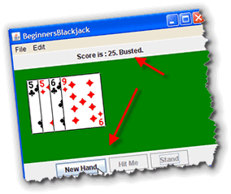
In the last two lessons you've done graphical programming usingGraphics class to draw pictures on your
applets, and the object-oriented ACM Graphics classes, like
GImage and GRect in your applications.
You haven't yet worked with graphical "interactors" or GUI components, like buttons and labels. In this lesson, you'll learn how to add buttons and labels to your programs. That way the users of your video Blackjack program will be able to tell you whether they want to hit or stand, and you'll be able to tell them when they've won or lost.
Before we do that, though, let's take a look at that intriguing term, widget.
What are Widgets?
 Michael Gleicher, in his
1994 Carnegie Mellon Computer Science Thesis,
A Differentital Approach to Graphical Interaction,
discusses the use of numerical constraint solving as a basis for the
creation of direct manipulation graphical interfaces. In the
paper he describes, and illustrates, the rotation
widget pictured to the right.
Michael Gleicher, in his
1994 Carnegie Mellon Computer Science Thesis,
A Differentital Approach to Graphical Interaction,
discusses the use of numerical constraint solving as a basis for the
creation of direct manipulation graphical interfaces. In the
paper he describes, and illustrates, the rotation
widget pictured to the right.
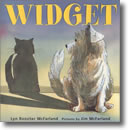
Six years later, on September 5, 2001, Lyn Rossiter McFarland, wrote her book about Widget, a wet, stray, homeless Westie, who masquerades as a kitten to be accepted into a family of six well-fed cats.Our widgets, though, have nothing to do with lost dogs or mathematical constraints. For us, widget is a generic term that, in the programming world, has come to mean a control or component used to construct a Graphical User Interface (GUI). Widget refers to the graphical controls that are used to capture user input and to display your computer's output. This includes things like pushbuttons, checkboxes, radio buttons, labels, scrollbars, menus, text areas and so on.
Java Widget Toolkits
Now you've probably noticed that these widgets often look
different on different platforms. The buttons and labels on a
Mac look a lot different than those on Windows. Even on the
same platform, though, the widgets can take on a different look
and feel. In Windows XP, for instance, you can choose whether
all of the controls will use the XP look, or the Windows
Classic look
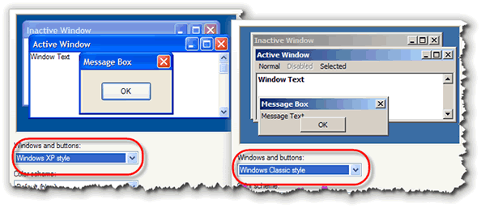
A collection of widgets is commonly called a toolkit. Java actually has two different toolkits that you can use. The "orginal" Java widgets are called the AWT components; AWT stands for Abstract Window Toolkit. When Java 2 came out, a second widget toolkit was added to the Java class libraries. This toolkit is officially named the JFC, which stands for the Java Foundation Classes, but it's almost universally referred to by the code name in use when the classes were developed: Swing.While the Java Class Libraries include both the AWT and Swing toolkits, there's nothing to stop you from using an entirely different set of widgets. That's what Eclipse does; the folks at IBM who originally created Eclipse didn't especially like either Swing or the AWT and so they developed the Standard Widget Toolkit or SWT. While you can use the SWT in your programs, you'll have to distribute the SWT library along with your program classes, just like Eclipse does.
You can also
think of the graphical ACM classes we used in the last lesson
as a toolkit of sorts. The AWT Label class, for
instance, is similar (in ways) to the GLabel class you
used in the last lesson.
AWT and Swing
To get started, let's take a look at some of the main "players" in the AWT/JFC family tree" of classes: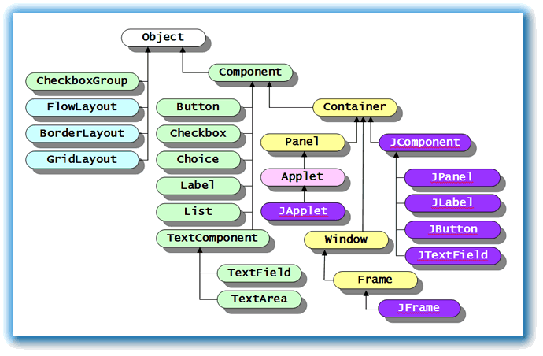
The diagram shown here is an inheritance hierarchy that shows the relationships between the different GUI classes. In Java, theObject class is ultimate superclass
for all classes, not just the GUI classes. Although it's an
important class, for the AWT and Swing toolkits, the
Component class is probably more important.
Component is the direct
superclass for almost all AWT
GUI "widgets" such as Label, Button,
and TextField, as you can see from the illustration.
(These are the classes highlighted in green.)
Heavyweight and Lightweight
As you can see from the picture above, for every component in the
AWT, such as Button or Label, there is a
similar Swing component that starts with J: the JButton
and the JLabel, for instance. This continuity allows
you to build on what you already know, while adding new functionality.
In addition to these "replacement" components, there are also new
components available that are not available in the AWT. These
include the JSlider class, the JProgressBar
class, and the JToolBar class, as well as more complex
and sophisticated components such as trees, grids, and editors.
You might wonder why the JFC didn't simply improve the
existing Button class instead of adding a whole new
class. There is an important reason for this, and it underlies the
basic difference between the AWT and Swing:
- In the AWT, all components are created by the underlying operating system using a system of "parallel objects" known as peers. Because of these operating-system created peers, AWT widgets are called heavyweight components.
- In the JFC, all components, (except for
JFrameand a few others, are lightweight components--they don't involve the operating-system created peers that underly the AWT.
Two important consequences follow from this underlying difference:
- In the AWT, the user interface will take on the look of
the operating system that the program is running on, since the
components are actually created by the host operating system.
The same Java program will appear as a Windows program when run
on Windows, and as a Mac program when run on the Mac.
With Swing, that's not necessarily true; a Swing program can look the same on the Mac, Solaris, and Windows by using a "cross-platform look and feel". Swing programs can also emulate the host look and feel, but the components are not created using native widgets, but are "drawn" by the Java runtime. - Swing and AWT components don't "mix and match" very well.
Because of their different underlying architectures, you should
try and use only Swing components or only AWT
components; not half-and-half. That's why the
Buttonclass wasn't simply improved; it's because Swing is a fundamentally different animal than the AWT.
My recommendation is to use the AWT components for applets, which should be as accessible as possible, and to use Swing for Java applications, where you can ship a Java runtime with your program if necessary. For your ACM graphics programs, we'll use the Swing components.
This doesn't mean, however, that the AWT has gone away. In fact,
as you can see from the picture above, all of the new Swing
components are derived from java.awt.Container, (which is,
itself, derived from java.awt.Component, so all of
the time you spent learning how to use Java's Component
class is time well spent. In addition, all of the Graphics
methods in the AWT have been retained, and many of them have been
enhanced in the Java 2D packages.
Using Widgets
In this class, we'll be using the JFC (or Swing)
components inside our ACM graphics programs. The JFC components
are not part of the ACM libraries though, like the
GImage and GRect classes are. The
JFC widgets are part of the standard Java class libraries.
That means that the JFC components will work exactly
the same way when you use them in a "regular" Java GUI program.
The only difference is that with the ACM programs, it's a little
easier to make the widgets look good when you add them to your
program. In a regular Java GUI program, there's quite a bit of
code required to set up the "container" part of your program,
and to place the widget where you want it to go; this is code
that the ACM GraphicsProgram class supplies for you.
Basic Widgets
You can really write quite a few programs by learning to use
just a few different components. At a minimum, you'll need
controls for input, processing and output: the basic
operations of every computer program. The components we'll
use for that are:
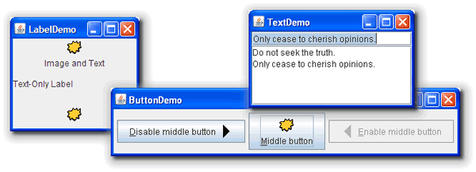
- The
JButtonwidget, which you'll use to trigger the processing step in your program. When someone clicks a button, you'll take a particular action. - The
JLabelwidget, which you'll use to display the results of your processing back to the user. - The
JTextFieldwidget, which will handle the input side of the IPO equation.
Importing the Swing Package
To use any of these widgets in your program, you'll need to
add a new import statement at the top of every
program that uses them. All of these widgets are in the
javax.swing package, so just add:
import javax.swing.*;
to the top of your file. The x in javax means that the classes are a standard extension to the base Java class libraries. Of course, since they're included in the Java Class libraries themselves, the word extension doesn't have much meaning. When Swing was originally released, these extension classes were included in a separate JAR file, just like the ACM classes are now.
Although all of the JFC widgets are included in the
javax.swing package, you still will usually
need to import the java.awt package as well,
so that you can use classes like Color and
Font.
A Widget Checklist
To use any kind of widget in your program, whether it's a
JButton, a JTextField or a
JLabel, you'll always follow
these three basic steps. Think of them as a checklist
or a recipe:
- First, create a widget instance variable. You don't need to initialize it.
- Next, use a widget constructor to create
a widget object. Often, however, the widget constructor
won't complete all of the required initialization. You
may want to change the size or color of the widget.
You'll normally create your object and perform this
additional initialization will go inside your
program's
init()method. (If you're writing a non-ACM program, you can put it inside your program's constructor instead.) - Finally, you need to place the widget on the surface of the program, so that the user can see and interact with it.
Here's the what each of these steps looks like in code:

In ACM Graphics programs, you can add the component to one of the borders of the program (that is, on the north or south) or you can place it on the graphics canvas itself. In an applet or a regular non-ACM program, you'd normally create a panel and then add the widget to that. As I mentioned earlier, though, the ACM method is a little easier.
If all of this sounds familiar, it should! It's almost exactly what you did when you worked with the ACM graphical shapes in the last lesson.
Step 1: Instance Variables
In the example shown here, the widget is created as an instance variable, or field. You should make your widgets instance variables whenever you have to use them later in other parts of your program.
Instance variables, or fields were introduced back in Lesson 2A, but they aren't covered until Chapter 3 in your textbook. We'll be looking at instance variables in depth in the next unit when you learn how to create classes or user-defined types. Since we haven't actually used instance variables until now, I've repeated the information here.
In Java, variables created outside of a method are
officially called fields. However, in the real world,
you'll more often see them called instance variables,
which is a more general object-oriented term.
 Instance variables can be used inside any method in the class.
Normally, instance variables are created using the access
modifier
Instance variables can be used inside any method in the class.
Normally, instance variables are created using the access
modifier private, so that the variable cannot
be used outside of the class. Occassionally, fields will
use the modifier protected, so that subclasses
created from the class may directly access the fields.
It doesn't matter where inside the class the instance variable is created. Some programmers and textbooks like to put them at the bottom of the program, while others place them at the top.
In very rare instances, programmers will use the
public modifier to allow unrestricted access
to an object's instance variables. This is almost always a
poor idea, as the designers of Java's Point,
Dimension, and Rectangle classes
discovered after-the-fact.
Unlike local variables, instance variables are automatically
given a value (initialized), even when you don't provide an
initial value. Numeric variables (like int) are
initialized to the value 0, while object variables are given
the special value null. In the example here,
the field velocity starts with the value
0.0. Everytime the move() method is called,
velocity increased by .2.
Step 2: Instantiation and Initialization
Inside the init() method, or your program's
constructor, you'll instantiate widgets for each of
your widget instance variables. Remember that creating an
object variable does not create the actual object.
When you create the actual object, use the name of the
instance variable, but don't precede the name
with the widget type. That would create a local
widget object, and not instantiate your instance variable.
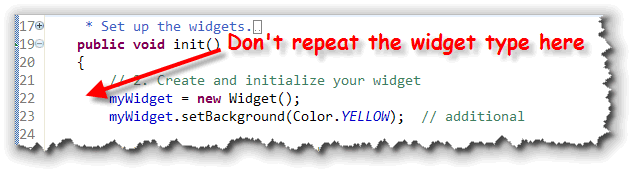
In addition, if you need to do any additional widget initialization, you can do it right after you've created the widget object. Here I've set the background property for my widget to yellow. If a widget is only used for display (like most
Label objects, for instance), you should make
the widget either a local variable, inside the
init() method, or simply construct and pass
the widget to the add()
method, (inside the init() method), like this:
 In the example shown here,
In the example shown here, myWidget2 is a local variable
that can't be accessed outside of the init() method.
Because it's a local variable, it doesn't use the
private modifier. (In fact, it can't use the
private modifier, which is legal only for instance
variables and methods.)
Line 33 creates an unnamed (or anonymous)
Widget object, rather than a local variable. You
can use an anonymous object if you aren't going to make any
changes at all to the object, once it's created. You'll often
do this for purely descriptive labels, for instance.
Step 3: Adding Your Widgets
When you create widget object using the new
operator, it's constructed and stored in memory, but it isn't
yet visible to the user of your program. To make a GUI
component visible, you need to add it to some kind of
container.
In this case, that's your ACM GraphicsProgram itself.
To add a component to a container, you use, naturally, the method
named add(). (This is true in all Java GUI programs,
not just ACM programs).
 In ACM programs, though, you can tell the component which border
location you want to place it into, using the constants
In ACM programs, though, you can tell the component which border
location you want to place it into, using the constants
NORTH, SOUTH, EAST
or WEST. When using these, remember that they
are all upper-case.
In a GraphicsProgram you can also place widgets on
the canvas area as well. To do this you:
- Retrieve the
GCanvasobject that makes up the center of an ACM graphics program. - Add the widget to the canvas, supplying parameters for the x,y location of the widget.
Here's what that looks like in code:
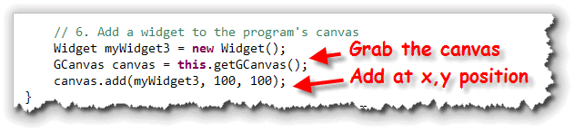
The JLabel Class
Of course, there is no Widget class. Now that you've
seen the pattern, though, you can apply it to the first,
and one of the simplest, of the real JFC core components,
the JLabel.
JLabel class defines a set of objects that:
- can hold a single line of text.
- know how to display themselves
- can be positioned and moved around the screen.
- contains a surprising amount of information about their appearance, such as font size, text color, alignment, and so on.
The JLabel is very similar to the ACM GLabel
class, but with a few differences: a JLabel has a background
and can display images, for instance. Also, JLabel objects
use their upper-left corner for positioning, while GLabel
object use the text baseline, like the drawString()
method does.

JLabel Constructors
If you run the JLabelWorld program, you'll see that it
compiles and runs just fine. The only problem is, it doesn't
look like much, since we've used the no-argument constructor
for each of the JLabel objects.
To run JLabelWorld.java on your own machine, click the link in this sentence to download the source code. You'll also need the the image file: car1.gif and the cards images from the last lesson. Once you've downloaded the image file, just drag and drop it in your current Eclipse project, along with JLabelWorld.java.
The JLabel class has six different constructors.
The first three are used for creating labels that display
text values:
JLabel()
JLabel(String message)
JLabel(String message, int alignment)
Use the first constructor, the one that takes no parameters, if
you intend to modify the message displayed as your program
runs, but don't have a valid message when the program first
starts up. If your JLabel object is going to
display the results of a calculation, for instance, you
might not want to display anything until the calculation
is complete.
The second constructor is the most common. Simply provide
a message when you construct your JLabel, and the
object itself will take care of the painting chores.
Using this info, we can change our sample code so that it
actually displays something by rewriting the label-creation
line as so:
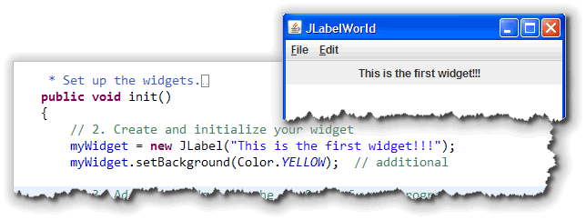
Where's the Background?
One difference between the Swing JLabel and its AWT cousin, is that
Swing labels don't automatically have an opaque background. If you want the
label's background color to show up, you need to use the setOpaque()
method, as I've done here:

JLabel Alignment
The last constructor allows you to change the alignment of the
message within the JLabel object itself. You do
that by passing a second argument, which must be one of these
class constants:
JLabel.LEFTJLabel.CENTERJLabel.RIGHT
Be careful with the spelling of these constants. Note that the
class name is proper-case, while the constant name is upper-case.
You must spell the constant correctly for this to work.
If you use either of the other two constructors, they
automatically use the JLabel.LEFT alignment.
Students are frequently frustrated when trying to
use the alignment constants because they don't do exactly what
you'd expect. Specifying JLabel.CENTER, for instance,
does not center the label on the program; instead, it
centers the text inside the label. Since the JLabel
objects normally size themselves according the text they
display, the effect is very hard to see. If you make the
label very wide, however, it becomes apparent.
JLabels with Images
In addition to the three "text-only" constructors, three
additional constructors let you create JLabels that
incorporate images, either alone or along with some text:
JLabel(Icon icon)
JLabel(Icon icon, int alignment)
JLabel(String message, Icon icon, int alignment)
Note that each of these requires you to supply an Icon
parameter, not a String like you did with
the GImage class.
So, how do you create an Icon object. It's actually
pretty easy using Java's ImageIcon class, although
it is more complicated than using GImage
which hides some of the complexity from you.
ImageIcon
The ImageIcon class makes creating images
easy by preloading the images automatically. There are nine
ImageIcon constructors, but the one which you'll
use most often is this one:
ImageIcon(String filename);
Using this constructor, creating an ImageIcon is as
easy as:
ImageIcon one = new ImageIcon("car1.gif");
ImageIcon two = new ImageIcon("images/car2.gif");
The first example loads the image from a file in the current directory, while the second loads the image from the images subdirectory, immediately beneath the current directory where your program is running.
Note the use of forward slashes, even on machines, such as Windows and Mac, which use different path separators.
This constructors assumes that your application's
images are stored as "standalone" files. "Real" Java applications,
though, usually "zip up" all of their files into a Java Archive, or
JAR file. When you do that, the ImageIcon constructor
shown here stops working.
In those cases, you can use this "magic incantation" which searches
through the program's class path (including inside JAR files),
and loads the image if it can be found:
new ImageIcon(getClass().getResource("Car1.GIF"));
Since this code works equally well for stand-alone images as
for those packaged inside JAR files, you should probably use
this code for all of your ImageIcon constructors.
The GImage class uses some code like this
"under the hood".
Here's a change to the JLabelWorld program so that
myWidget2 uses the three-parameter constructor
to display both an image as well as a description of the
image, while the anonymous JLabel uses the
"icon only" constructor to display an image of a playing card:

 Notice that when the program runs, the panel that contains the
Notice that when the program runs, the panel that contains the
JLabel expands to contain the largest label
(the label using the "Ace of Spades" image).
Note also that the label with the opaque background also expands so that it is the same height as the other labels.
Image and Text Alignment
The JLabel class has the ability to specify
both the horizontal and vertical alignment of the label
contents. In addition, you can specify the horizontal and
vertical position of the text (relative to the image), and the
spacing that should appear between the text and the image
(if any).
To see how this works, lets rearrange the contents of
the Range Rover JLabel:

- We can align the
icon at the top and center of the
JLabel, usingsetVerticalAlignment()andsetHorizontalAlignment(). - Then, we can align the text separately by using the
setHorizontalTextPosition()andsetVerticalTextPosition()methods. - Finally, we can set the spacing between the text and the image on the
JLabelby using thesetIconTextGap()method.
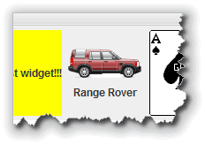
Now, let's turn our attention to a second component. Let's face
it, the JLabel really doesn't know a whole lot of
tricks. The JButton's middle name, by contrast,
is action. If you want something to happen in your Java
program, you use a JButton object
to start it off and then you write a method to carry out the
action you want performed.
JButtons
Creating buttons is actually a little easier than creating labels, since there is no concept of "alignment". That means you only have to learn four constructors, instead of six:
JButton(); // the default constructor
JButton(Icon); // displays an image
JButton(String); // displays text
JButton(String, Icon); // displays both text and an image
While there is a no-parameter JButton constructor, it
isn't as useful as the JLabel constructor,
since you rarely want to create such an "empty" button.
The other three constructors allow you to
specify the text, icon, or combination of text and icon that
will appear on the button. You use the ImageIcon
class to create an icon for a JButton, just as
you did for the JLabel class.
Here's a fragment of the
JButtonWorld program that creates three buttons
using each of the last three constructors.
 The first button (btn1)
has only an icon, the second, (btn2) has only text, while the
third, (btn3) has both.
The first button (btn1)
has only an icon, the second, (btn2) has only text, while the
third, (btn3) has both.
Mnemonics and ToolTips
JButtons automatically handle "mnemonic" key
identifiers ("shortcuts" or "hot-keys" for us mere mortals), as well
as tool-tips. Here's the section of JButtonWorld
(lines 35-40) that activates both of those features:
 The
The setMnemonic() method is used to assign an
Alt+Key keyboard shortcut to a particular button. If the button
contains text, then the shortcut character will be underlined.
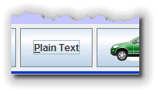
Line 37 usesbtn2.setMnemonic('P'); to assign
the keyboard shortcut Alt+P to the plain text
JButton. When the button is displayed, the 'P' in
"Plain Text" is underlined as shown here.
You can use keyboard shortcuts that don't generate a
printable character code by using the virtual key constants
in the KeyEvent class. In our program, btn1 is
assigned to the Alt+F1 function key combination on line 39.
Tool-Tips
Adding a "tool-tip"—the small help message that appears when your mouse hovers over a component for a few seconds—is even easier than setting a keyboard shortcut.
You just call the method setToolTipText(),
like this:
btn1.setToolTipText("Click here to order a red Range Rover");
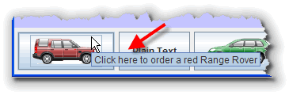
The tool-tip displays your message and the keyboard shortcut (if you've assigned one) when it pops up.To run ButtonWorld.java on your own machine, click the link in this sentence to download the source code. You'll also need the two image files: car1.gif and car2.gif. Once you've downloaded the two image files, just drag and drop them in your current Eclipse project, along with JButtonWorld.java.
What about the Clicks?
I started this section by saying that the JButton's
middle name was action, but we haven't actually talked
about making something happen when you click your button.
In fact, that's such a big subject, that we'll take the whole
next lesson to cover it. For right now, though, let's look at
the last of our IPO GUI widgets: the JTextField.
JTextField
 A
A JButton object is useful when you
want to carry out an action, and a JLabel object
is useful when you want to impart some information to your user.
When you need to get some information, however, nothing
beats a JTextField, and its sibling, the
JTextArea.
The JTextField is our first GUI input component.
A JTextField object is a single-line
input area that allows your users to supply
data to your program as it runs, such as the mileage,
and number of gallons used in the gas-mileage calculator
shown here.
That means you can start writing programs that are actually useful.
Constructing JTextFields
Let's get started
by looking at the methods you'll use to create
JTextField objects.
The JTextField class has five different
constructors, but you'll normally use one of these four:
JTextField()
JTextField(int numChars)
JTextField(String initialText)
JTextField(String initialText, int numChars)
- The first of these,
JTextField(), creates an empty field, usually big enough to hold one or two characters. Its behavior varies widely among different platforms, though, so you shouldn't use this one unless you plan on setting a size for your component separately. - The second,
JTextField(int numChars), creates a field big enough to holdnumChars, average-width characters. (This is the one you'll normally use). - The
JTextField(String initialChars)constructor makes a field holding theString initialCharspassed as an argument; the field is sized accordingly. You may, occassionally use this constructor. It's useful if you want to pre-fill a field with a default value, where every value is the same width, (such as a 2-character "state" field). - The constructor
JTextField(String initialString, int numChars)acts like a combination of the last two. It sizes the field so that it will be able to holdnumCharcharacters, but fills the on-screen control with theString initialString. You'll normally use this constructor when your field has a default initial value.
Let's look at an example, so you can see all four JTextField
constructors at work.
TextFields By Example
This program, JTextFieldWord.java creates
four JTextField objects, named oneTF,
twoTF, threeTF, and fourTF:
(Imaginative names, huh?).
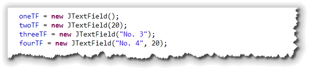
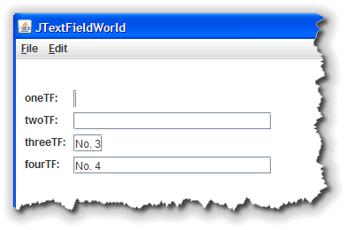
Here's what the program looks like when it runs. Notice that the first two fields have no initial text. That's the most common situation with aJTextField;
after all, you're using them to get input, not to display
output. Note also, that since I didn't explicitly size
the first field, the program did it for me. As you can see,
it's a little too small for text input.
The fields created by the last two constructors
are similar; the last is explicitly sized, while
threeTF is implicitly sized.
Instead of adding the fields to the north or south part of
the application, I've actually added them to the canvas itself,
using this code:
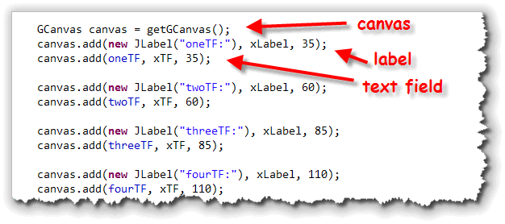
For each text field, I've also added an anonymousJLabel
to identify the text field.
TextField Methods
The most oft-used method in the JTextField class is
the one that retrieves the information entered by the user.
Normally, a user types information into a JTextField,
and you use the getText() method to retrieve the
information, and to store it in a String, like
this:
String oneStr = oneTF.getText();
You can also use the setText() method to change
the text contained in a text field. If you had a guessing game,
for instance, and you wanted to "zero out" the JTextField
where the user entered the guess, you could use this code:
theGuess.setText( "" );
The pair of double-quotes, without any space or characters inside, is called the empty string. Setting the text of a component to the empty string is how you say "remove all of characters in this component".
Numeric Input
Note that all JTextField input is
textual input. If you want to let your users enter
numeric data, then you have to:
- grab the input as a
Stringand store it in a variable. - then using the various parsing methods (
such as
Integer.parseInt()orDouble.parseDouble()) to convert theStringto the numeric value you need.
The only problem with doing this (other than the
extra work, of course), is that if the user types something
that isn't parseable (like the word "cat"),
then your program "crashes" with a runtime error.
To get around this problem, the acm.util package
includes two additional varieties of JTextField:
IntField and DoubleField.
In addition to the setText() and getText()
methods, these classes also have setValue() and
getValue() methods that automatically convert the
input value for you.
JTextField Alignment
With JTextField you can use the method:
myTF.setHorizontalAlignment(JTextField.TRAILING);
to right-align the text in a text-field. Often, users will find this much more natural, when then have to input numeric data, since the input fields will line up just like the output fields.
You can specify JTextField.LEFT and
JTextField.RIGHT instead of JTextField.LEADING
and JTextField.TRAILING. The LEADING/TRAILING identifiers
allow your code to work correctly if the applet is used with
right-to-left reading languages, instead of the left-to-right
that you're probably comfortable with.
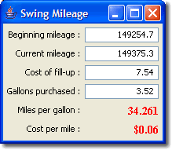
Here's a Java application that calculates gas mileage, written as a regular Swing application. Each of the input fields has the horizontal alignment to the right. You can check out the code for SwingMileage.java by clicking the link in this sentence.Note, though, that even though the input labels are nicely right-aligned, (and look a whole lot better), the user can still skip a value or input invalid data which makes the program blow up. Using the ACM fields would fix this problem.
You might have noticed that the buttons in
the SwingMileage application look a little diffferent
than the Swing programs we've used before; specifically, it's
taken on the Windows XP "look and feel" instead of the
"Java look". Some versions of Java will do this automatically,
(such as Apple's JVM). For the rest, though, you can force your
application to adopt a native dress by adding these lines to your
main() method:
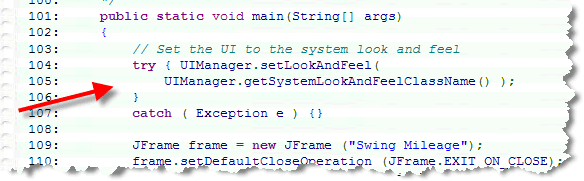
Coming Up...
In this lesson, you learned how to use three of Java's
Swing GUI widgets: the JLabel to display text and
images, the JTextField to get user input, and
the JButton to trigger some processing when the
user clicks "GO".
Of course, nothing happens when your buttons are clicked, so you really can't write a working application yet. We'll remedy that in the next lesson as you learn how to handle events.